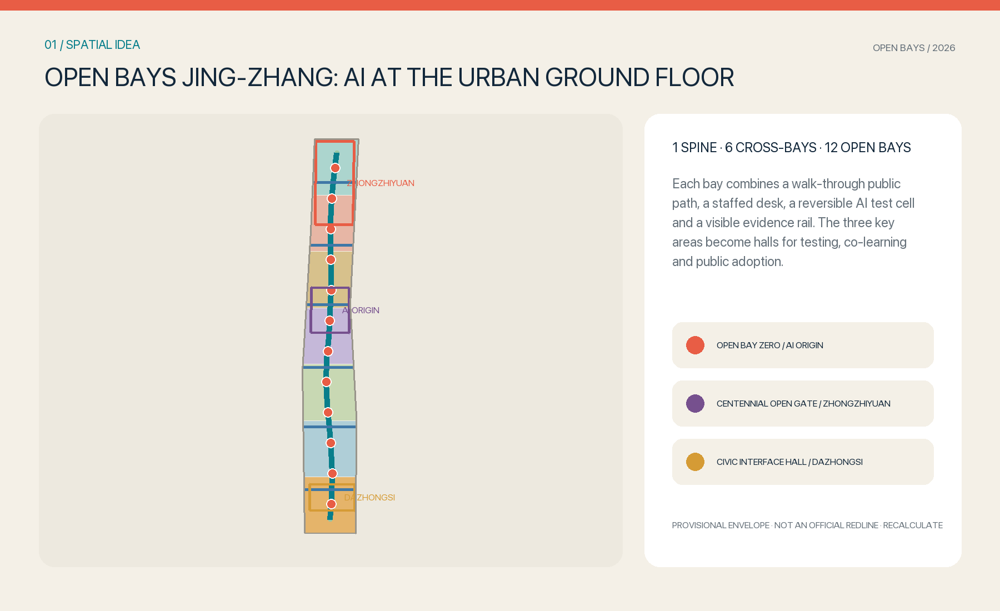
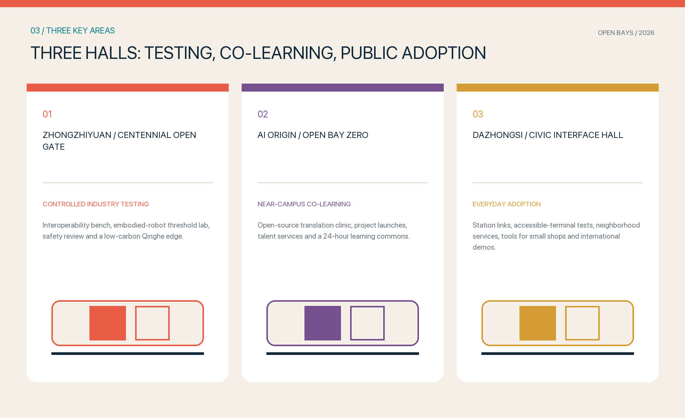
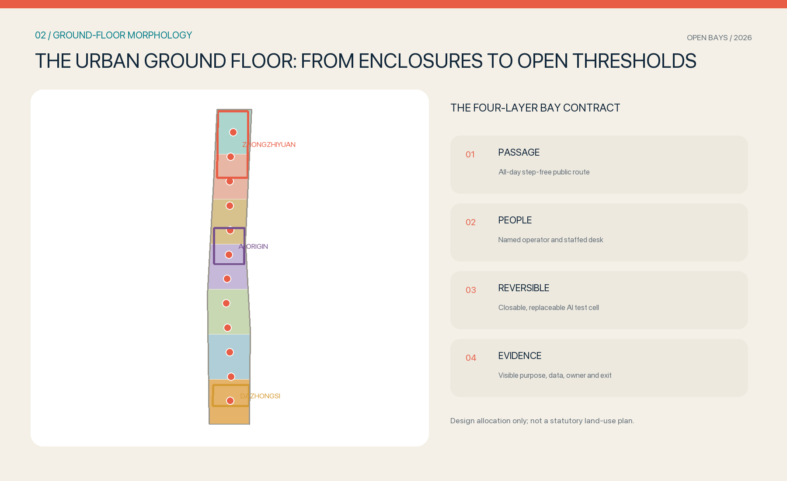
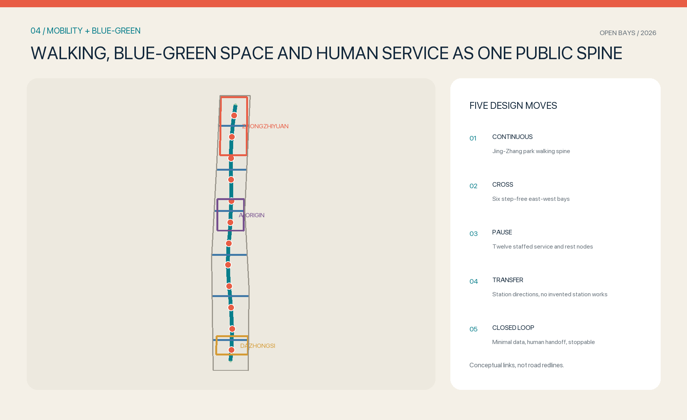
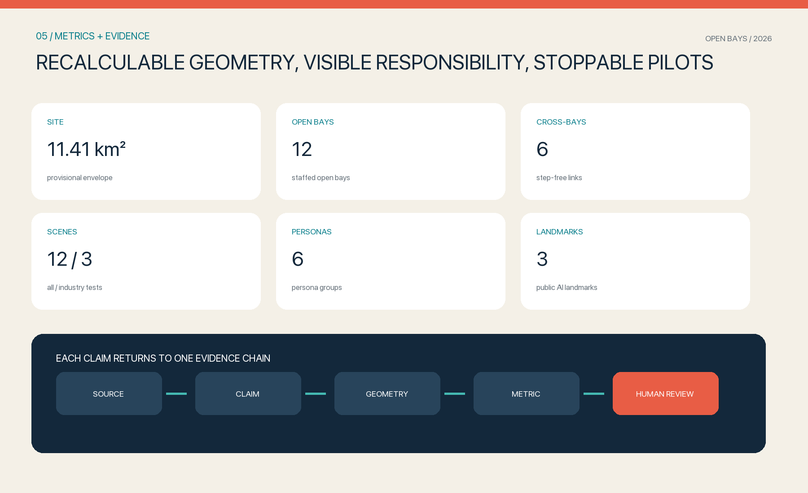

ZHONGZHIYUAN TEST HALL
Interoperability, embodied robotics and safety tests run in bounded, stoppable space.
Offline visual report. Maps, scope, key areas, allocation, mobility, blue-green space, buildings, projects, AI scenes, metrics, task coverage, checks, sources and assumptions derive from one structured package.

Interoperability, embodied robotics and safety tests run in bounded, stoppable space.
Open-source translation, launches, talent service and learning open onto the ground floor.
Accessible terminals, small-shop tools, civic service and international exchange adapt in daily flows.



Twelve open bays include three controlled industry tests. Every scene has minimum data, human handoff and a stop condition. Projects proceed in three phases without claiming unapproved works.
Values apply only to provisional geometry and require full recalculation.

Announcement items 1.3, 1.4 and 1.5 plus agent.1-agent.6 map to text, GeoJSON, metrics, drawings and checks. Deterministic, spatial, visual, professional and participant preflight checks form submission evidence.
sources.json · assumptions.json · compliance_matrix.json · standard_matrix.json · design_depth_matrix.json · self_check.json